Overview
Decision trees use a series of questions that repeatedly split the data with the ultimate goal of predicting observations using these questions. Each question represents an internal node, and each answer (prediction) represents a leaf. The primary consideration with constructing decision trees is deciding which questions to ask at each node. Some questions create more effective splits that others, which decreases the GINI impurity and entropy, and increases the information gain. Each of these is a different way of measuring how effective a node splits the data in a decision tree. The GINI impurity measures how impure the data in a leaf is by calculating the squared probabilities of each observation falling into a specific class, while the entropy calculates the log base-2 of these same probabilities. They meausre the same thing, but occupy different scales. Figure 1 shows how these two measures are plotted relative to each other. The information gain comapares the entropy of the parent node with the entropy of each child. A positive information gain implies that the previous node split the data effectively, and made the data in each child more pure than before. In general, it is possible to create infinitely many different kinds of trees since each tree can have a different number of nodes and leaves. However, it is crucial to choose the tree depth carefully to avoid overfitting the data.
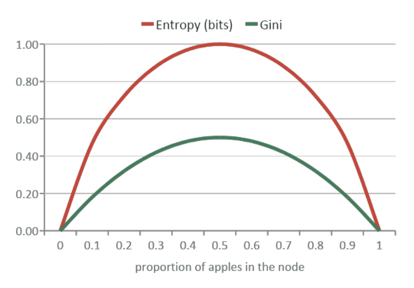
For example, consider a dataset that originally contains 5 apples and 5 oranges, but one of the apples is labeled as not a red fruit and and one of the oranges is labeled as a red fruit. Let a single node as whether or not each fruit is the color red. The answer to the yes/no question will split the data into two different leaves, and the gini impurity, entropy, and information gain can be calculated for each leaf. Figures 2 and 3 show this small decision tree and the resulting impurity measurements. This node results in a positive information gain, meaning it split the data into more pure samples.
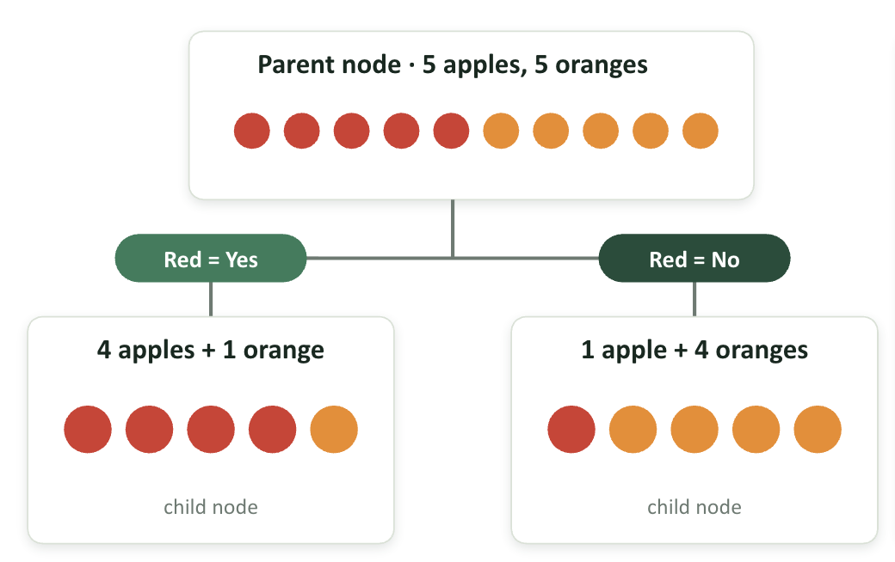
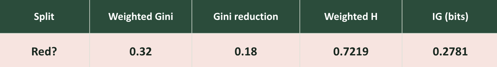
Data Prep
Since decision trees will predict labels of observations within the dataset, labeled numeric data is required. In the context of astrophysical transient detections, one useful label that is presented in the data is the photometric band of each observation. These bands (g, r, i) describe the wavelength ranges that each transient detection was observed in. In particular, these correspond to 400-550nm, 550-700nm, and 700-850nm, respectively. These are measured using transmission curves, which ultimately come from optical inference filters built into the instrument. All of these wavelength ranges are found in the optical/visible range of the electromagnetic spectrum, with a small fraction occupying the near-infrared range. The goal of training a decision tree here is to see whether or not the photometric bands of transient detections can be predicted based on transient rise/decay times. To obtain more sky coverage than before, 10 randomly-selected partitions will be used to train the NB classifier, rather than the first 10 partitions of data which occupy a narrow region on the sky. A snapshot of the data is shown below in Figure 1, which includes the transient rise/decay times and the photometric bands (used as labels). Figure 2 shows the labels associated with this dataset, and Figures 3 and 4 show the datasets split into tranining and testing data, respectively. This data is a result of the data cleaning that was described in the DataPrep_EDA tab. The full 10 partition dataset contains 2,634,436 rows. Finally, in order to construct a decision tree, the data need to be split into testing and training datasets. This was accomplished by allocating 20% of the dataset to testing data, and the other 80% to training data. The split was chosen randomly, but can be reproduced using a random_state identifier. Finally, the split attempts to keep roughly the same proportions of each label in both datasets.
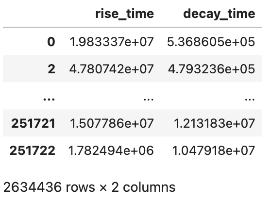
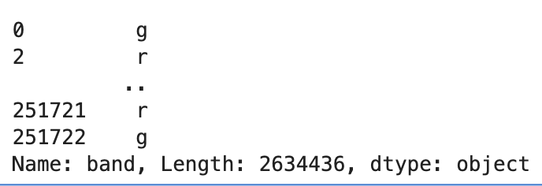
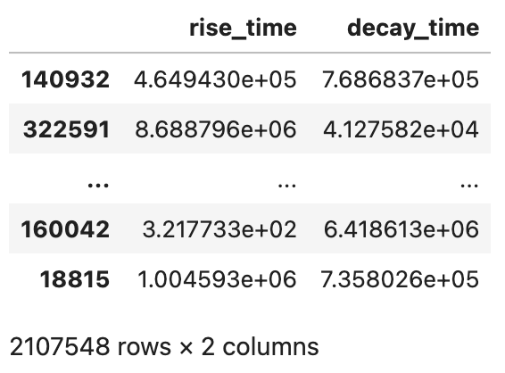
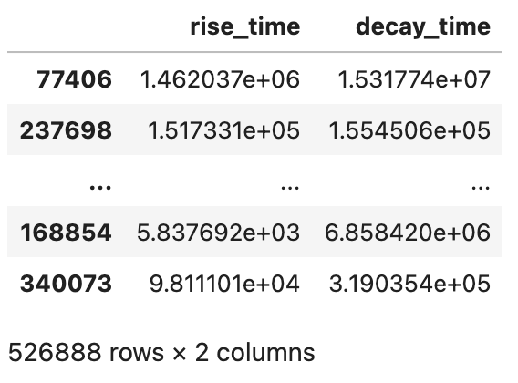
- Lightcurves ("s3://ipac-irsa-ztf/ztf/enhanced/dr24/lc/hats")
Code
The code used for this project can be found under the "Naive Bayes" header in the following jupyter notebook, which has been pushed to this github repository.
View Jupyter NotebookResults
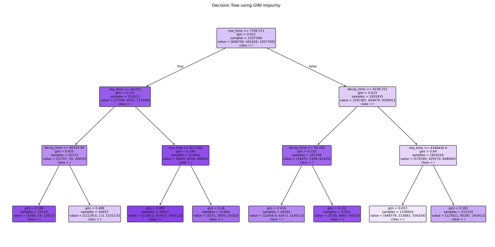
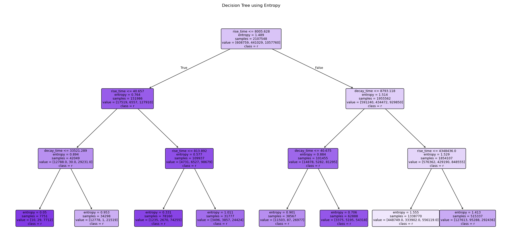
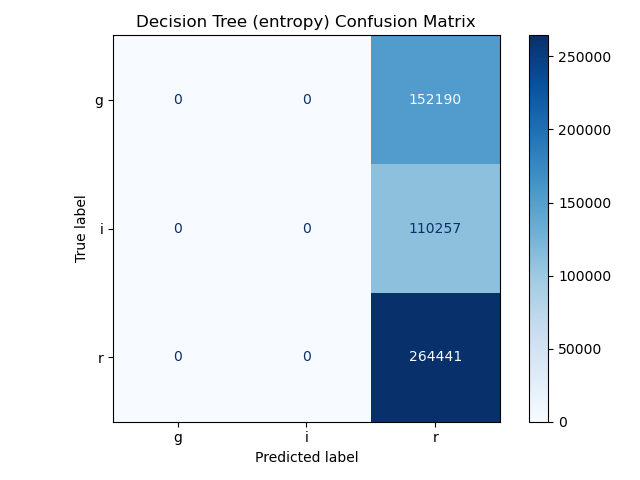
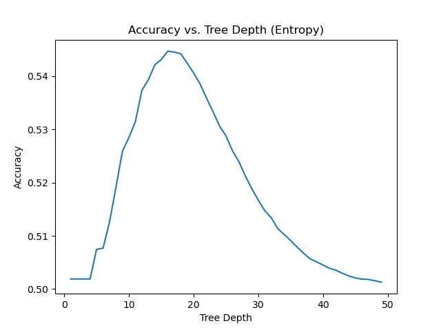
Conclusions
Using Figures 8-11 above, it is clear that the decision tree classifier could not accurately predict the photometric band of transient events based only on transient rise and decay times. An accuracy of about 0.502 means that the classifier was almost equally split between correct and incorrect predictions. The optimal tree depth for this dataset is 15, which more accurately predicts the photometric bands compared to even the NB classifier in the NaiveBayes tab. A tree depth of 3, however, appears to significanly underfit the data. This ultimately leads to an inaccurate classifier. In conclusion, this supervised machine learning method cannot tell us whether or not transient photometric bands can be predicted based on their rise and decay times.